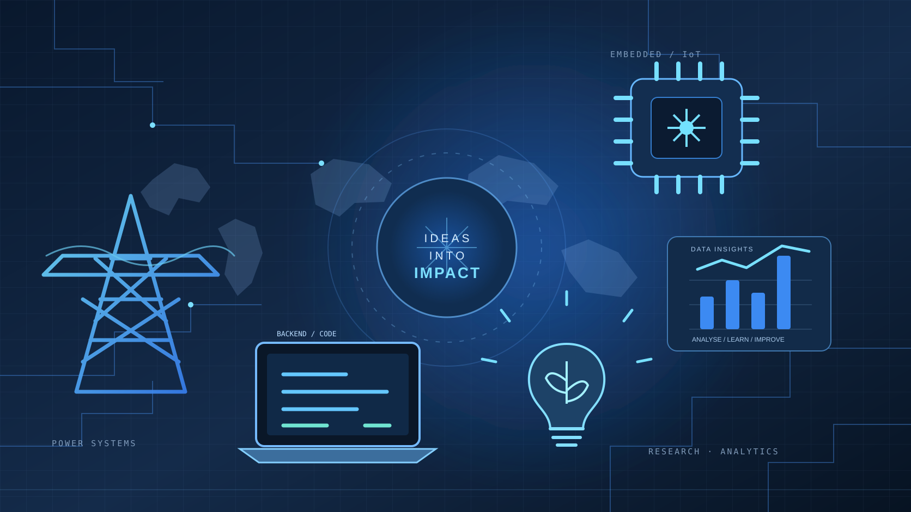

Electrical Engineering
& Power Systems
Electrical installations, power systems, motor control, maintenance, inverter systems and technical troubleshooting.
ENGINEERING · RESEARCH · TECHNOLOGY
Hello, I'm
I connect engineering, research and software to turn practical challenges into useful solutions.
My work spans electrical and power systems, embedded technology, multidisciplinary research, backend development and data analytics.

From physical systems to digital products — I enjoy understanding how things work, then making them work better.
01 / ABOUT
I am an engineering and technology practitioner with a multidisciplinary background and a strong interest in building solutions that connect theory with real-world use.
My foundation is in Electrical and Electronic Engineering Technology, specialising in Power and Machines. Through industrial practice and research training, I have worked across electrical installations, maintenance, prototyping, experimental analysis and collaborative technical projects.
Alongside engineering, I have developed skills in backend web development and data analytics. I value clear thinking, careful testing, continuous learning and working with people from different disciplines.
02 / EXPERTISE
A broad toolkit shaped by hands-on engineering, collaborative research and independent technology projects.
Electrical installations, power systems, motor control, maintenance, inverter systems and technical troubleshooting.
Microcontroller-based prototypes, sensor integration, monitoring systems and connected-device concepts.
Multidisciplinary prototyping, experimental design, laboratory analysis and applied problem-solving.
Server-side web applications, structured application logic, database integration and authentication learning projects.
Preparing, querying and exploring datasets to communicate patterns and support evidence-based decisions.
User-centred problem framing, interview practice, journey mapping, wireframing and usability thinking.
03 / SELECTED WORK
A selection of engineering, software and analytical work. Each project reflects a different way of approaching a problem.
A cost-conscious street-light concept combining light sensing, motion detection, automatic brightness control and remote security notifications.
View case study ↗A backend-focused learning management system project exploring server-side application structure and core web technologies.
View case study ↗An exploratory data analysis project examining workforce-layoff patterns across time, industries, companies and locations.
View case study ↗A departmental power-electronics project involving inverter design considerations, battery sizing, load assessment and system wiring.
View case study ↗A collaborative prototype exploring the monitoring of heart rate, blood pressure, oxygen saturation and ambient temperature.
View case study ↗Research contributions involving phytochemical analysis, post-harvest quality assessment and microbial assays related to tomato quality.
View case study ↗Project descriptions are concise summaries; technical details and supporting evidence can be added as each case study is documented.
04 / RESEARCH & COLLABORATION
At the Peace House Research and Innovation Centre of Excellence (PRICE), I have contributed to collaborative work that brings engineering, technology and biosciences together.
Contributed to an electric-vehicle prototype developed through collaboration across mechatronics, automobile engineering and welding/fabrication.
Worked with a multidisciplinary team on a prototype for collecting and displaying selected physiological and environmental measurements.
Contributed to experimental design, phytochemical analysis, post-harvest quality assessment and microbial assays related to tomato yield and quality.
05 / HOW I WORK
Clarify the need, constraints and context before choosing a solution.
Use the right mix of engineering, research and digital tools.
Prototype carefully, test assumptions and learn from evidence.
Document decisions and make technical work easier to understand.
06 / CONTACT
I'm interested in thoughtful collaboration, practical engineering challenges, research initiatives and technology projects.